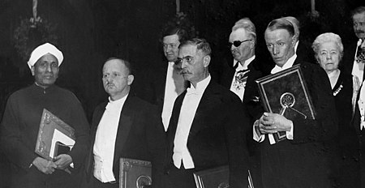
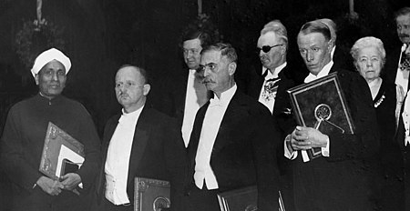

C. V. Raman
Nobel laureate for transformative Raman Effect in light scattering.
 

Abstract
Sir Chandrasekhara Venkata Raman won the 1930 Nobel prize in Physics "for his work on the scattering of light and for the discovery of the effect named after him." He held positions at Calcutta University and the Indian Institute of Science, and founded the Raman Research Institute.
Here's the timeline of C.V Raman
- November 7, 1888 - Birth, Tiruchchirāppalli (India).
- 1904 - Obtained BSc degree in Physics, Presidency College, University of Madras, Chennai (India).